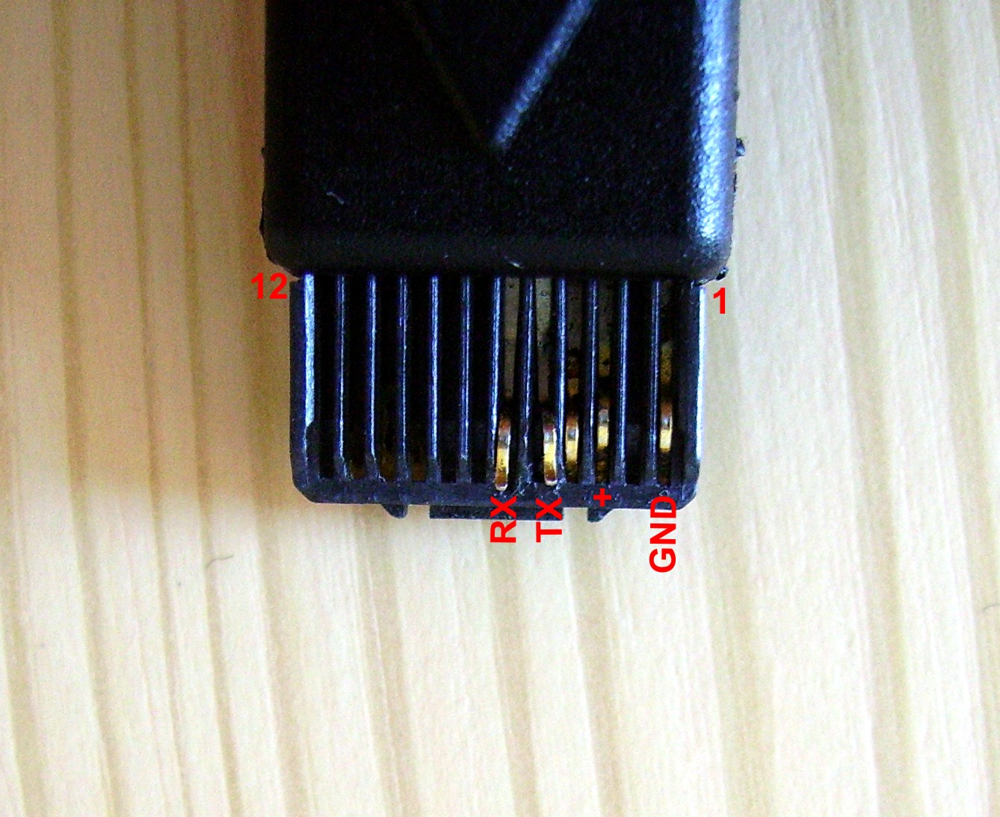
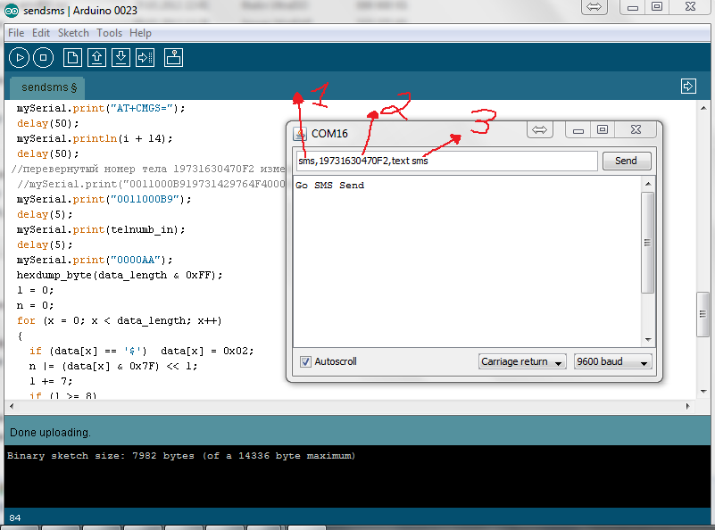

Не так давно я узнал о замечательном микроконтроллере Arduino у которого просто впечатляющие возможности по управлению различными периферийными устройствами (сенсоры, датчики, сервоприводы, светодиоды, реле и т.д.). Человек который далек от электроники, может с легкостью сделать простые схемы. Среда разработки Arduino IDE с упрощенным языком C, позволяет даже новичку понять принципы программирования, превращает занудный и сложный код C в легкий и доступный. Спасибо огромное моему коллеги Алексею, за предоставление в постоянное пользование телефона Siemens S45, с помощью которого мы и будем посылать сообщения.
Для начала нужно приобрести или сделать самому Data-кабель. Я сделал кабель из зарядного устройства, которое шло в комплекте с телефоном. В разъеме у меня не хватало 5го и 6го контакта. Пришлось разобрать похожий разъем от другого сименса и добавить в свой. Операция заняла чуть больше 20 минут. Старые разъемы можно легко разбирать в отличии от современных из цельно-литого пластика.

Следующим этапом идет подключение телефона Siemens S45 непосредственно к микроконтроллеру Arduino по схеме приведенной ниже:
Как видно по схеме ничего сложного нет. В своем варианте я отдельно подключаю питание к телефону от оригинального блока питания, так как телефон отказывался заряжаться от Arduino.
Теперь осталось загрузить наш скетч и попробовать отправить тестовое смс:
#include <NewSoftSerial.h>
#include <string.h>
NewSoftSerial mySerial(2, 3);
#define num_to_char(number) ((number) < 10 ? \
('0' + (number)) : \
(('A' - 10) + (number)) )
#define first_four(byte) (0x0F & (byte))
#define last_four(byte) ((0xF0 & (byte)) >> 4)
#define hexdump_a(byte) num_to_char( last_four(byte))
#define hexdump_b(byte) num_to_char(first_four(byte))
char inData[100];
char unitID_in[10];
char telnumb_in[14];
char textsms_in[100];
void setup()
{
Serial.begin(9600);
Serial.println("Go SMS Send");
mySerial.begin(9600);
}
void loop()
{
int i=0;
char buffer[100];
//если есть данные - читаем
if(Serial.available()){
delay(100);
//загоняем прочитанное в буфер
while( Serial.available() && i< 99) {
buffer[i++] = Serial.read();
}
//закрываем массив
buffer[i++]='\0';
}
//если буфер наполнен отправляем смс
if(i>0){
//разбираем буфер на части отделенные запятой через сериал монитор отправляем - sms,19731429764F4,text sms
sscanf(buffer, "%[^','],%[^','],%[^',']", &unitID_in, &telnumb_in, &textsms_in);
if ((String)unitID_in == "sms"){ //определяем команду отправки смс
char *indata=textsms_in;
send_sms(indata);
unitID_in [0] = '\0';
telnumb_in [0] = '\0';
}
}
}
void send_sms(char *data)
{
size_t data_length, x;
char c, l;
long i;
long n;
data_length = strlen(data);
i = data_length * 7;
if (i & 0x07) i = (i & ~0x07) + 0x08;
i = i / 8;
mySerial.println("AT+CMGF=0");
delay(50);
mySerial.print("AT+CMGS=");
delay(50);
mySerial.println(i + 14);
delay(50);
mySerial.print("0011000B9");
delay(5);
mySerial.print(telnumb_in);
delay(5);
mySerial.print("0000AA");
hexdump_byte(data_length & 0xFF);
l = 0;
n = 0;
for (x = 0; x < data_length; x++)
{
if (data[x] == '$') data[x] = 0x02;
n |= (data[x] & 0x7F) << l;
l += 7;
if ( l >= 8 )
{
hexdump_byte(n & 0xFF);
l -= 8;
n >>= 8;
}
}
if (l != 0)
{
hexdump_byte(n & 0xFF);
}
mySerial.write(26);
}
void hexdump_byte(unsigned char byte)
{
mySerial.print(hexdump_a(byte), BYTE);
mySerial.print(hexdump_b(byte), BYTE);
}
Отправка смс сообщения осуществляется через Serial Monitor. Задаем номер телефона и текст сообщения одной строкой.
На скриншоте ниже:
1) Служебная метка sms.
2) Номер мобильника в формате pdu (скачать программу для конвертации телефона и текста в pdu формат).
3) Текст сообщения.
Синтаксис с запятыми обязательно соблюдать.

Данную связку — телефона и микроконтроллера Arduino можно применить в различных проектах. Например сигнализации, оповещении обонента при срабатывании различных датчиков.